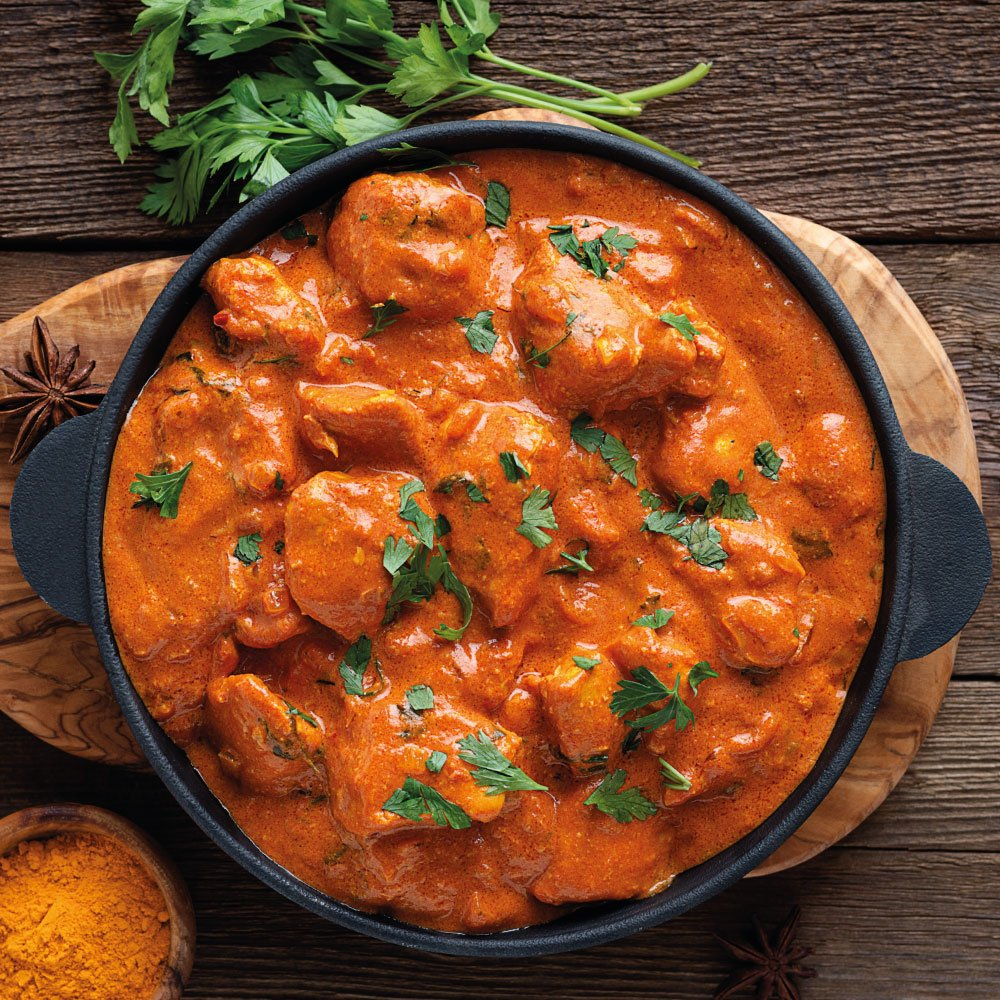

Butter Chicken

Ingredients:
- 500g boneless chicken, cut into pieces
- 1 cup yogurt
- 2 tablespoons butter
- 1 onion, finely chopped
- 2 teaspoons ginger-garlic paste
- 1 teaspoon garam masala
- 1 teaspoon turmeric powder
- 1 teaspoon cumin powder
- 1 teaspoon chili powder
- Salt to taste
- 1 cup tomato puree
- 1/2 cup heavy cream
- Fresh cilantro for garnish
Directions:
- Marinate the chicken in yogurt, ginger-garlic paste, turmeric powder, cumin powder, chili powder, and salt for at least 1 hour.
- In a pan, melt butter and sauté the chopped onions until golden brown.
- Add the marinated chicken and cook until it's no longer pink.
- Stir in garam masala and tomato puree. Cook for a few minutes.
- Pour in the heavy cream and simmer for another 5-7 minutes.
- Garnish with fresh cilantro.
- Serve hot with naan or rice.